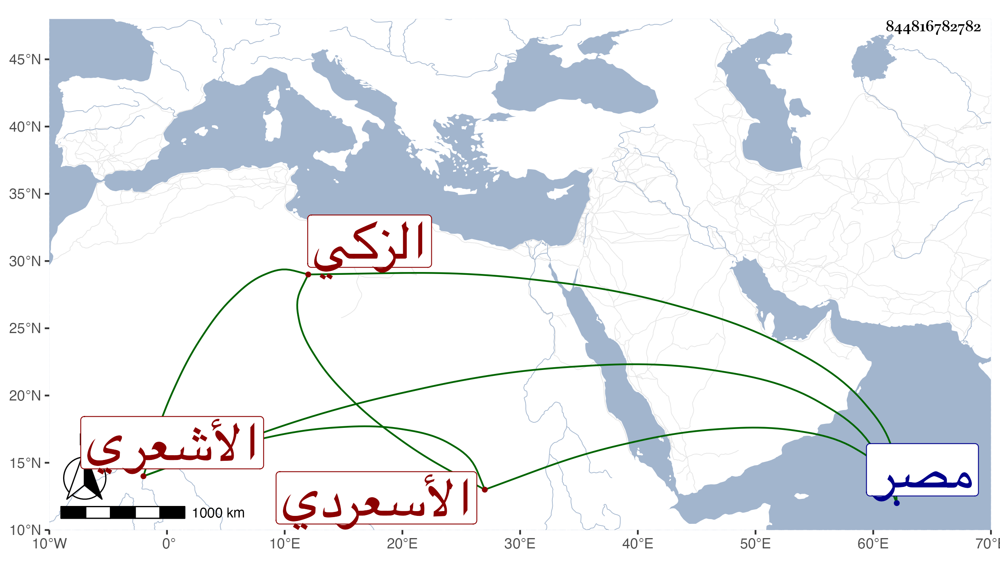

0902Sakhawi.DawLamic.ITO20230111-ara1.EIS1600.844816782782
Biography ID: 844816782782
323
محمد بن محمد بن عبد الله الزكي أبو البركات الأشعري ويقال له الأسعردي ولكنه كما نبه عليه الزين رضوان خطأ التونسي ثم القاهري المالكي المقرئ . تلا بالثمان على أبي حيان فكان فيما قاله الزين رضوان خاتمة القراء من أصحابه يعني إن لم يكن محمد بن محمد بن أبي القسم الآتي من جماعة أبي حيان قال ودرس للمالكية بصلاحية مصر وللأطباء بمنصورية البيمارستان وممن قرأ عليه الشهاب السكندري ورضوان . وبكلامه المتقدم قوى الظن أنه من شرطنا .
